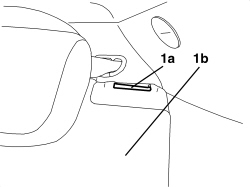
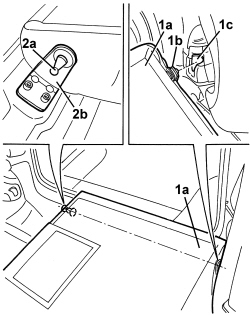

7050A13 SPLIT REAR SEAT LEFT BACKREST - R.R.
- Path
- Procedures > 70 FITTINGS > 7050 REAR SEATS > 7050A REAR SEAT ASSEMBLY > 7050A13 SPLIT REAR SEAT LEFT BACKREST - R.R.
- Kind
- repair procedure (removal / refitting; the operation number is the code)
- Applies to
- all engines; all production periods
- Interactive page
- https://sloeber94.github.io/elrnDB-aBrrSpdr/en/#/946002661
Applies to: all engines; all production periods
 Removing
Removing
 Refitting
RefittingOp. 7050A22 REAR SEAT CUSHION - R+R
Op. 7050A15 SPLIT REAR SEAT RIGHT BACKREST - R.R.
1. Operate the lever (1a) to release the left backrest (1b), then fold forward to the end of its travel.

Applies to: all engines; all production periods
1. Slightly raise the end (1a) of the backrest and disengage its side retainer (1b) from the housing (1c).
2. Withdraw the centre pin (2a) from the bracket (2b) and keep the backrest.

Applies to: all engines; all production periods
Refitting
Removing- Check that the backrest is not damaged.
- Bring the backrest up to its position by holding horizontally and then engaging the central pin in the bracket.
- Insert the backrest side retainer in its seat.
- Lift up the backrest to the end of its travel and and attach it to the retainer.
- Check that the fold-down backrest is working properly.
Topics linked from this page (2)
Topics that link to this page (21)
- O024 REAR SEAT BACKREST ADJUSTMENT STIFF
- O028 REAR SEAT BACKREST ATTACHMENT MISSING
- S057 NOISY REAR SEAT HEAD RESTRAINT
- 1040A10 FUEL TANK - R + R AND DECANT FUEL
- 1040A14 FUEL TANK - R + R FOR REPLACEMENT
- 1040A70 SUBMERGED PUMP ASSEMBLY COMPLETE WITH LEVEL GAUGE CONTROL - R + R
- 1040B36 REAR FUEL DELIVERY LINE - R.R
- 1040B56 REAR FUEL RETURN PIPE - R.R.
- 5570T96 REAR SIDE SPEAKER (ONE), LEFT OR RIGHT- R.R
- 5580C40 SIDE BAG SENSOR (ONE), LH OR RH - R.R.
- 5580C50 WINDOW BAG MODULE (ONE) LH OR RH - R.R
- 7040H50 REAR PANEL (ONE), LEFT OR RIGHT - R.R
- 7040H51 ODDMENTS POCKET ON REAR SIDE PANEL (ONE), LEFT OR RIGHT - R.R.
- 7040H53 MOULDING ON REAR SIDE PANEL (ONE), LEFT OR RIGHT - R.R.
- 7040H54 GRILLE FOR SPEAKER IN REAR SIDE PANEL (ONE), LEFT OR RIGHT - R.R.
- 7040H55 COVER ON REAR SIDE PANEL (ONE), LEFT OR RIGHT - R.R.
- 7040L10 PASSENGER COMPARTMENT FLOOR COVERING - R.R.
- 7050A14 SPLIT REAR SEAT ASSEMBLY - R+R
- 7050A42 REAR BACKREST CATCH DEVICE (ONE) - R+R
- 7050D34 TRIM FOR LEFT REAR SEAT BACKREST (TWO SEATER) - R.R.
- 7065A12 FRONT SEAT BELT (ONE), LEFT OR RIGHT, WITH PRETENSIONER ON REEL - R.R